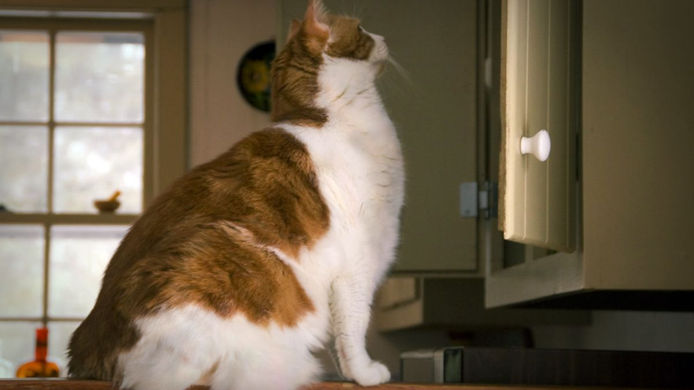
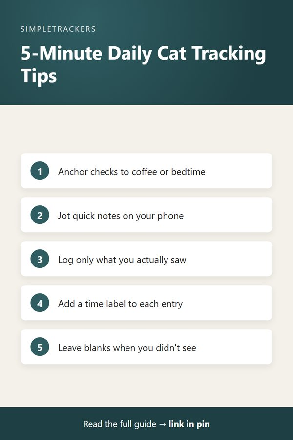

Building Your Daily Tracking Routine: How to Log Without Overwhelm
← Back to the Complete Multi-Cat Household Guide

Key takeaways
- It takes minutes, not hours: a practical routine fits into a few minutes a day and saves mental energy.
- Anchor to existing habits: tie checks to morning coffee, a lunch break or bedtime.
- Log only what you saw: leave blanks or write "not observed" instead of guessing.
- Review weekly: ten minutes once a week reveals trends daily notes miss.
- Consistency beats perfection: simple, honest daily tracking outlasts an ambitious system you abandon.
Start Small: The 5-Minute Daily Practice
If the idea of tracking your multi-cat household sounds like it will add hours to your day, take a breath. It won't. A practical tracking routine takes just a few minutes each day.
Unlike trying to remember details later, it actually saves you mental energy by getting observations out of your head and onto a record you can return to anytime. The key is to make it a small, manageable habit rather than an overwhelming extra chore, whether you have two cats or ten.
Choose Your Tracking Windows
The most realistic routines anchor to natural breaks in your day. Most cat owners find tracking works best around meals, bathroom breaks or other established routines.
| Window | Time | What to note |
|---|---|---|
| Morning check | 2–3 minutes | During coffee or breakfast: which cats you see, their general activity level and anything from overnight, like litter box activity or behavioral changes. Sets the tone for the day. |
| Midday note | 1–2 minutes | If you're home or on a lunch break: did that cat eat their morning food? Did you hear someone use the litter box? |
| Evening review | A few minutes | Before bed, consolidate what you noticed through the day and log it all at once. Even if this is your only formal session, it ensures you have a record. |
You don't have to fill every cell
Not every cat needs to be logged every day for every column. Log what you actually observed. If you didn't see a cat eat, leave that cell blank or note "not observed." The tracker is for recording reality, not for filling in guesses.
Keep a Simple Notebook Nearby
If you can't update your tracker during the day, keep a small notebook or use your phone's notes app to jot quick observations:
- "9:30am — Shadow in litter box"
- "Noon — Whiskers didn't finish breakfast"
- "4pm — Luna very active, playing"
Then consolidate these quick notes into your formal tracker during your evening session. This two-step approach keeps you from losing observations while giving you flexibility about when you sit down to update the full tracker.
Focus on What You Can Observe
A routine is sustainable only if it's based on observations you can realistically make. Don't try to track something you can't see.
- Shared litter boxes. If several cats share a box and you can't tell which cat used it, just note the total usage you observed that day.
- Water intake. If you don't know exactly how much one cat drank, write "normal" or "high" based on what you actually see.
The goal is not perfect data. It's honest observations that give you a clearer picture than guessing from memory.

Use Time Labels for Clarity
When you log an observation, include a time label in your notes column: "Morning check," "Midday" or "Evening." This shows when in the day you made the observation and whether it represents the whole day or just a snapshot. It also helps your vet understand the timeline if you share the tracker.
Example entry
"Date: Tuesday, Time: Morning check, Cat: Mittens, Behavior notes: Eating normally, active play." This tells a much clearer story than just "normal" without context.
Build a Weekly Review Into Your Routine
Once a week, perhaps Sunday evening or whenever works for you, spend 10 minutes reviewing the week's tracker and look for patterns:
- Behavior. Did any cat's behavior shift noticeably?
- Appetite. Did anyone's appetite increase or decrease?
- Activity. Is each cat's activity level typical or different?
This weekly review helps you notice trends that day-to-day observations might miss, and things developing over time.
Make It a Sustainable Habit
The most important part of any tracking routine is consistency. It's far better to track honestly and simply every day than to aim for perfection and then abandon the tracker because it feels like too much.
- Start with morning and evening. If that's all you have time for, that's enough.
- Give it a week or two. Let the routine settle in.
- Add a midday check if it feels natural. The routine evolves as it becomes part of your life.
To get started with a structured, ready-to-use tracking system that takes the guesswork out of format and organization, download the Multi-Cat Household Health & Litter Tracker. It comes with example rows showing exactly how daily logging looks in practice, so you can jump right in without having to figure out your own system from scratch.